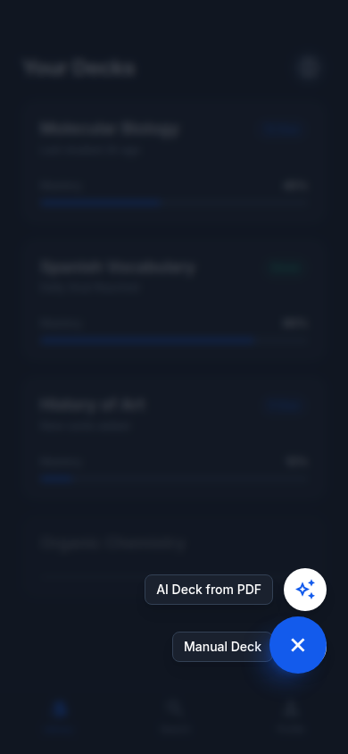
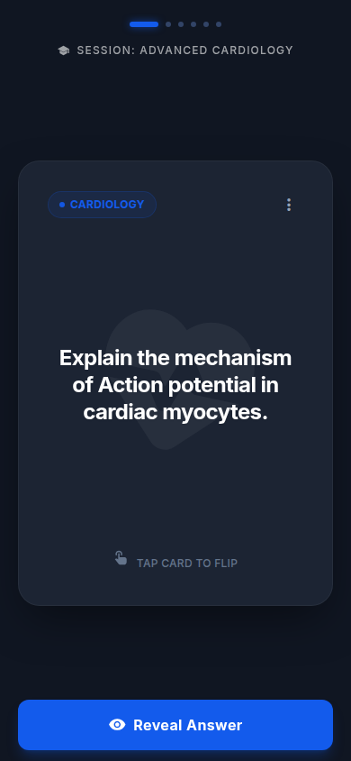
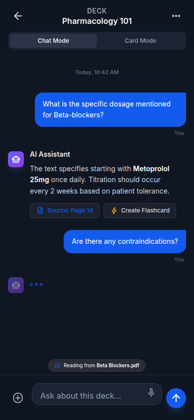
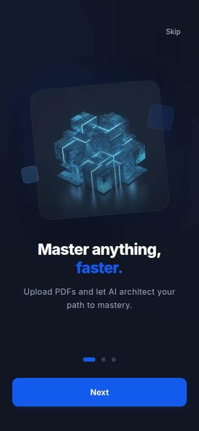
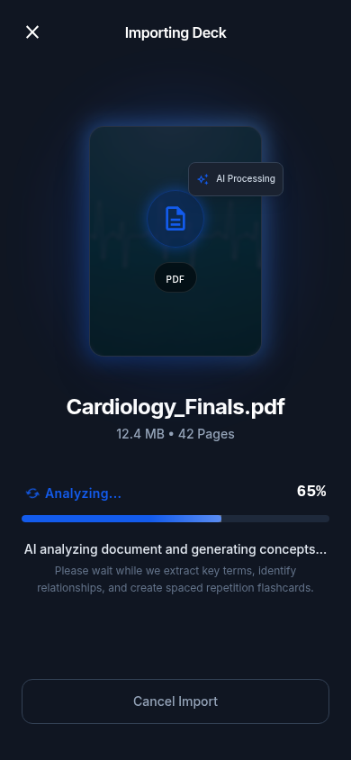

1
Crie um deck
Dê um nome, uma descrição e uma cor. Cada deck tem o seu próprio tutor, o seu próprio agendamento e as suas próprias estatísticas.
Gratuito · Em breve na Play Store
O Memora agenda cada card pela repetição espaçada e mostra só o que vence hoje. Você estuda menos e lembra mais — com uma IA que gera os cards a partir dos seus textos e PDFs.
O que dispara a fase 0 do potencial de ação no miócito cardíaco?
A abertura rápida dos canais de sódio dependentes de voltagem, que despolariza a membrana e inverte o potencial.
Próxima revisão em 3 dias



Sem revisar, o que você estudou hoje escorre em poucos dias. Cada revisão feita no momento certo deixa a queda mais lenta — e é exatamente esse momento que o Memora calcula por você.
Cada ponto azul é uma revisão. Quanto melhor você avalia o card, maior o intervalo até ele voltar — e menos tempo você gasta com o que já sabe.
Do material bruto ao card na tela, sem cadastro e sem configurar servidor nenhum.
Dê um nome, uma descrição e uma cor. Cada deck tem o seu próprio tutor, o seu próprio agendamento e as suas próprias estatísticas.
Cole um texto ou envie um PDF e escolha quantos cards quer — de 5 a 50. Antes de salvar, você revisa e edita cada sugestão. Ou escreve tudo à mão, se preferir.
A cada card você diz como foi, e o algoritmo decide quando ele volta. Terminou a fila do dia? Acabou — ou siga no modo de estudo livre.


Nada aqui é promessa para a próxima versão.
Agendamento no estilo SM-2: intervalo, facilidade e data da próxima revisão calculados card a card, a partir da sua própria auto-avaliação.
Texto colado ou PDF de até 20 MB e 100 páginas. Pedidos grandes são divididos em lotes com progresso ao vivo, e nada é salvo sem a sua revisão.
Um chat que já conhece os cards daquele deck. Seis modelos de agente — de professor de inglês a modo prova — mais idioma, nível e prompt próprio.
Travou num card? Peça uma explicação profunda, com exemplos, mnemônicos e conexões. Ela fica guardada no card para reler depois, sem internet.
Leitura em voz alta na hora do estudo, com o idioma detectado pelo conteúdo do deck. Útil para vocabulário e para revisar sem olhar a tela.
Sequência de dias, taxa de acerto, revisões de hoje, os últimos 30 dias em barras e a previsão do que vence nos próximos 7 — tudo do seu histórico real.
Exporte tudo num arquivo .json e importe de volta
quando quiser. A importação mescla pelo mais recente: nada é
apagado.
Tema completo nos dois modos, seguindo o sistema, com layout que se adapta de celular a tela grande — o app roda em Android, iOS e web.
Sem chave cadastrada, o app continua inteiro para criar cards à mão e estudar. Só a geração, o tutor e o insight ficam desligados.
Não é uma política de privacidade generosa: é a arquitetura do app. Não existe servidor para onde mandar os seus dados, e você pode conferir isso no código.
Feito em Flutter e publicado sob a licença MIT. Tudo o que está escrito nesta página pode ser conferido no repositório — sem depender da nossa palavra.
$ git clone https://github.com/matheusz-nied/Memora.git $ flutter pub get $ flutter run
A licença MIT cobre o código escrito aqui, não as dependências de
terceiros. Em especial, a
syncfusion_flutter_pdf, usada para extrair o texto dos
PDFs, não é open source: exige a Community License da Syncfusion
(gratuita, com registro, para organizações com receita anual abaixo
de US$ 1 milhão e menos de 5 desenvolvedores) ou uma licença
comercial. Se você não se enquadra, precisa contratar a comercial ou
trocar o extrator.